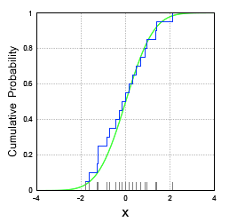
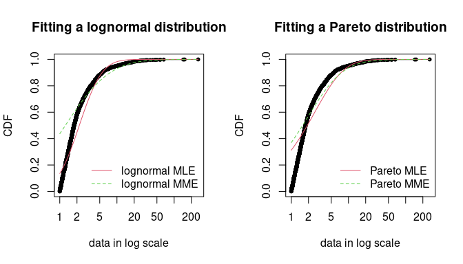
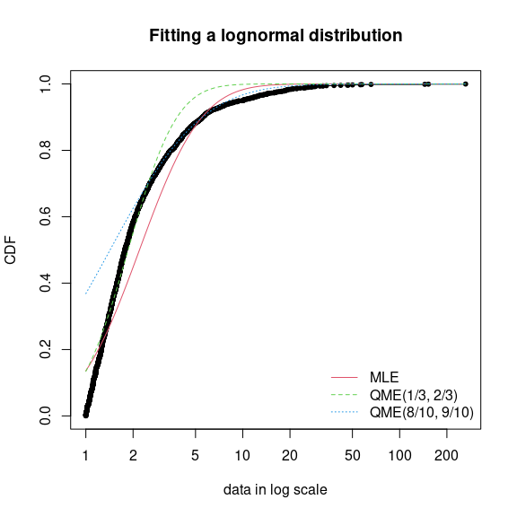
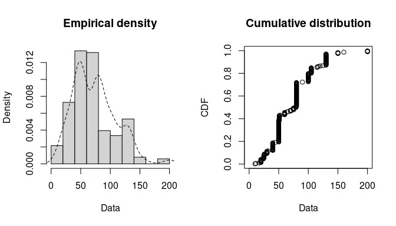
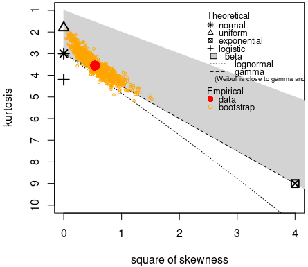
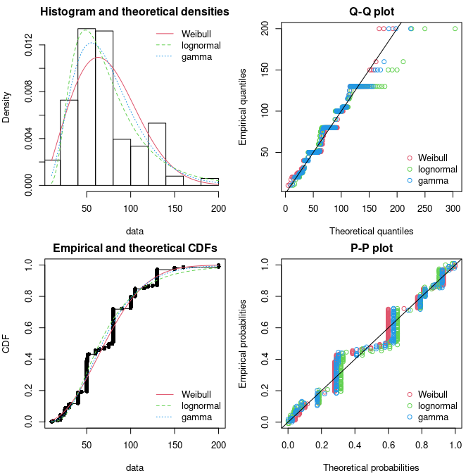
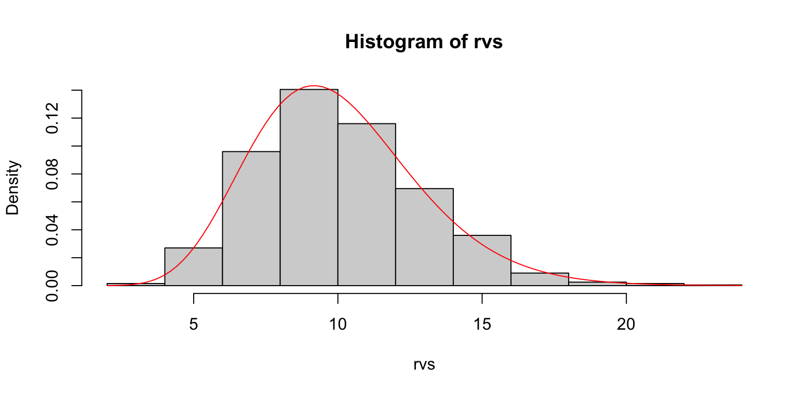
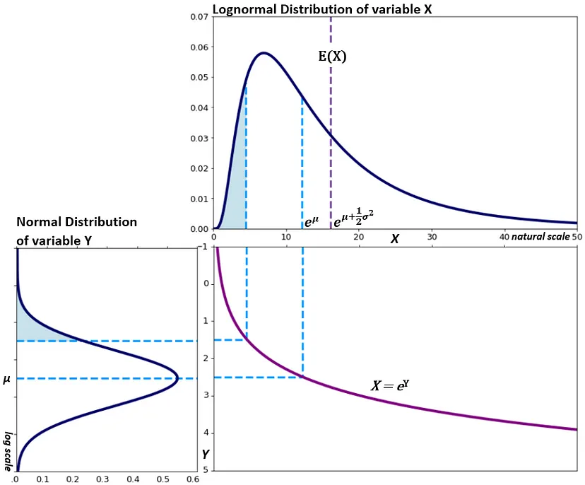
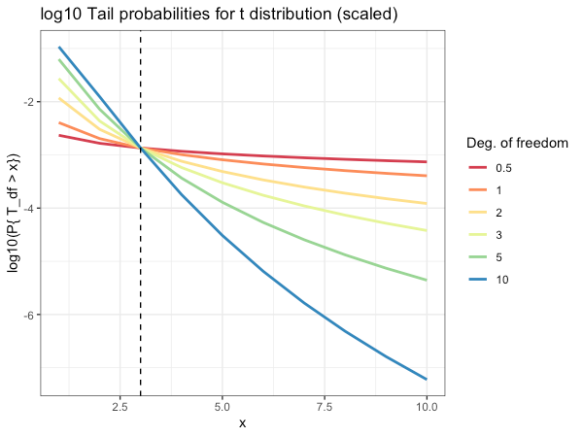

Distributions
Misc
- Packages
- {distributionsrd} (Paper): Distribution Fitting and Evaluation
- Exponential, Gamma, Lognormal, Weibull, Burr, Frechet, Two, Three-Composite, Inverse Pareto, Double Lognormal Pareto, Left Lognormal Pareto, Right Lognormal Pareto
- {sn} - Facilities to build and manipulate probability distributions of the skew-normal and some related families, notably the skew-t family and the unified skew-normal (SUN)) family.
- For the skew-normal, the skew-t and the skew-Cauchy families, it also makes available statistical methods for data fitting and model diagnostics, in the univariate and the multivariate case
- {distributionsrd} (Paper): Distribution Fitting and Evaluation
- For a skewed distribution, a Winsorized Mean (percentage of points replaced) often has less bias than a Trimmed Mean
- For a symmetric distribution, a Trimmed Mean (percentage of points removed) often has less variance than a Winsorized Mean.
Terms
Conditional Probability Distributions
- Notes from https://www.causact.com/joint-distributions-tell-you-everything.html#joint-distributions-tell-you-everything
- Notation: \(P(Y | X) = P(Y \;\text{and}\; X) / P(X) = P(Y, X) / P(X)\)
- i.e. ratio of 2 marginal distributions
- Example: two tests for cancer are conducted to determine whether a biopsy should be performed
- Conditional approach: Biopsy everyone at determined to be high risk from test 1; measure the genetic marker (aka test 2) for patients at intermediate risk and biopsy those with a probability of cancer past a certain level based on the marker
- When we perform regression analysis, we are essentially estimating conditional distributions. The conditional distribution, \(P(Y|X_1, \ldots, X_n)\) represents the distribution of the response variable, \(Y\), given the specific values of the predictor variables, \(X_1, \ldots, X_n\).
Empirical CDF
\[ F_n (x) = \frac {1}{n} \sum_{i = 1}^n I(X_i \leq x) \]
- Where \(X_1, X_2,\ldots,X_n\) are from a population with CDF, \(F_n (x)\)
- Process
- Take n samples from an unknown distribution. The more samples you take, the closer the empirical distribution will resemble the true distribution.
- Sort these samples, and place them on the x-axis.
- Start plotting a ‘step-function’ style line — each time you encounter a datapoint on the x-axis, increase the step by 1/N.
- Example
- The CDF of a normal distribution (green) and its empirical CDF (blue)
Joint Probability Distribution - Assigns a probability value to all possible combinations of values for a set of random variables.
- Notation: \(P(x_1, x_2, ... ,x_n)\)
- Plugging in a value for each random variable returns a probability for that combination of values
- Example: Two tests for cancer are conducted to determine whether a biopsy should be performed
- Joint approach: biopsy anyone who is either at high risk of cancer (test 1) or who was determined to have a probability of cancer past a certain level, based on the marker from the genetic test (test 2)
- Compare with example in Conditional Probability Distributions
- In the context of regression modeling: the joint distribution refers to the distribution of all the variables involved in the regression analysis. For example, if you have a regression model with a response variable \(Y\) and predictor variables \(X_1, \ldots, X_n\), the joint distribution would describe the combined distribution of \(Y, X_1, \ldots, X_n\).
Location - Distribution parameter determines the shift of the distribution
- e.g. mean, mu, of the normal distribution.
Marginal Probability Distribution - Assigns a probability value to all possible combinations of values for a subset of random variables
- Notation: \(P(x_1)\)
- \(P(x_1,x_2)\) is sometimes called the Joint Marginal Probability Distribution
- The marginal distribution, \(P(Y)\) where \(Y\) is a subset of random variables, is calculated from the joint distribution, \(P(Y = y, Z = z)\) where \(Z\) is the subset of random variables not in \(Y\) .
- \(P(Y) = \sum_{Z=z} P(Y = y, Z = z)\)
- If \(Y\) is just one variable
- Says sum all the joint probabilities for all the combinations of values for the variables in \(Z\) while holding \(Y\) constant
- Repeat for each value of \(Y\) to get this summed probability value
- The marginal distribution is made up of all these values, one for each value of \(Y\) (or combination of values if \(Y\) is a subset of variables)
- If \(Y\) is just one variable
- When the joint probability distribution is in tabular form, one just sums up the probabilities in each row where \(Y = y\).
- In the context of regression modeling, the marginal distribution of \(Y\) represents the distribution of \(Y\) alone, without considering the specific values of the predictor variables.
- \(P(Y) = \sum_{Z=z} P(Y = y, Z = z)\)
- Notation: \(P(x_1)\)
Scale - Distribution parameter; the larger the scale parameter, the more spread out the distribution
- e.g. s.d., sigma, \(\sigma\) of the normal distribtution
- Rate Parameter: the inverse of the scale parameter (see Gamma distribution)
Shape - Distribution parameter that affects the shape of a distribution rather than simply shifting it (as a location parameter does) or stretching/shrinking it (as a scale parameter does).
- e.g. “Peakedness” refers to how round the main peak is
- A higher shape parameter usually results in a more peaked distribution with thinner tails.
- A lower shape parameter usually results in a less peaked distribution with thicker tails.
R’s Distribution Functions
Misc
- Examples of other probability distributions:
runif,pexp,qchisq,dt
Naming Convention
- The functions follow a naming convention based on the distribution and the operation:
r<distribution>: Generates random numbers from the distributiond<distribution>: Computes the density (or probability mass function) of the distributionp<distribution>: Computes the cumulative distribution function (CDF)q<distribution>: Computes the quantile function (inverse of the CDF)
Normal
rnorm(n, mean, sd): Generatesnrandom numbers from the normal distribution with specifiedmeanand standard deviationsd.dnorm(x, mean, sd): Computes the density of the normal distribution atxwith specifiedmeanandsd.pnorm(q, mean, sd): Computes the CDF of the normal distribution atqwith specifiedmeanandsd.qnorm(p, mean, sd): Computes the quantile (inverse CDF) of the normal distribution for probabilitypwith specifiedmeanandsd.
Binomial
rbinom(n, size, prob): Generatesnrandom numbers from the binomial distribution withsizetrials and success probabilityprob.dbinom(x, size, prob): Computes the probability mass function of the binomial distribution atxwithsizetrials and success probabilityprob.pbinom(q, size, prob): Computes the CDF of the binomial distribution atqwithsizetrials and success probabilityprob.qbinom(p, size, prob): Computes the quantile of the binomial distribution for probabilitypwithsizetrials and success probabilityprob.
Tests
- Misc
- *In the definitions of the statistics below, \(F_i = F(x_i)\) which is the empirical CDF*
- Cramer-von Mises and Kolmogorov-Smirnov (and probably Anderson-Darling?) do not take into account complexity (From {fitdistrplus} vignette)
- i.e. the number of paramaters needed to describe a particular distribution
- These tests could select a distribution just because it has a larger number of parameters.
- When comparing distributions with unequal numbers of distributional parameters, you should pay more attention to the AIC, BIC, or Chi-Sq statistic than KS, CvM, and AD.
- See Fitting Distributions >> {fitdistrplus} >> GOF Statistics for Continuous Distributions
- Why normality tests are great… as a teaching example and should be avoided in research
- tl;dr; KS test has very low power as a Normality test as compared to Shapiro-Wilk, and Shapiro-Wilk isn’t very good for n < 100
- For detecting moderate skew, you want at least n > 75 to get 80% power for Shapiro-Wilk
- Shapiro-Wilk can detect very fat tails at n < 100, but would require larger sample sizes to detect more moderately thick tails.
- KS is worthless in detecting fat tails and near-worthless at detecting skew
- When n gets large (e.g. 1000s), these types of tests will almost always reject the null even when the practical deviation from normality is not practically significant.
- MMD and Energy comparison
- Both provide robust methods for comparing distributions
- MMD leverages the rich structure of RKHS, offering flexibility through kernel choice and tuning, whereas energy distance directly utilizes geometric properties of the sample space.
- The energy distance can be obtained from the MMD by using the linear kernel
- MMD vs Energy vs KBQD (QuadratiK paper)
- Using a skewed normal distribution
- Power
- All have similar power with rankings best to worst: KBQD, Energy, MMD
- Power increases as skewness of the samples increases for all tests
- i.e. Higher power if testing if there’s a difference between the distributions of two variables if they have skewness.
- For n = 100, 500, 1000, all had low power for n = 100.
- For high dim situations (e.g. 20, 50), KBQD and MMD have steady p-values while energy fluctuates
- Compute Time: Energy is fastest by far. MMD is next, and KBQD significantly slowest.
- Power
- Using Cauchy and t-distribution
- MMD and Energy detected the difference in samples from different parameterizations of these distributions while KBQD did not.
- Using a skewed normal distribution
- Kolmogorov–Smirnov test (KS)
\[ \begin{aligned} &\text{KS} = \max(D^+,D^-) \\ &\begin{aligned} \text{where} \: D^+ &= \max_{i = 1, \ldots, n} (\frac{1}{n} - F_i) \\ D^- &= \max_{i = 1, \ldots, n} (F_i - \frac{i-1}{n}) \end{aligned} \end{aligned} \]- Used to compare distributions
- Can be used as a Normality test or any distribution test
- Can compare two samples
- Misc
- Vectors may need to be standardized (e.g. normality test) first unless comparing two samples H0: Both distributions are from the same distribution
- Packages
- {KSgeneral} has tests to use for contiuous, mixed, and discrete distributions written in C++
- {stats} and {dgof} also have functions,
ks.test- Both handle continuous and discrete distributions
- All functions take a numeric vector and a base R density function (e.g.
pnorm,pexp, etc.) as args- KSgeneral docs don’t say you can supply your own comparison sample (2nd arg) only the density function but with stats and dgof, you can.
- Although they have function to compute the CDFs, so if you need speed, it might be possible to use their functions and do it manually
- 2-sample test as the greatest distance between the CDFs (Cumulative Distribution Function) of each sample
- Specifically, this test determines the distribution of your unknown data sample by constructing and comparing the sample’s empirical CDF (see Terms) with the CDF you hypothesized. If the two CDFs are close, your unknown data sample likely follows the hypothesized distribution.
- KS statistic, \(D_{n,m} = \max|\text{CDF}_1 - \text{CDF}_2|\) where \(n\) as the number of observations on Sample 1 and \(m\) as the number of observations in Sample 2
- Compare the KS statistic with the respective KS distribution based on parameter “en” to obtain the p-value of the test
- \(en = (m \times n) / (m + n)\)
- Used to compare distributions
- Cramer-von Mises (CvM)
\[ \text{CvM} = \frac{1}{12n} + \sum_{i=1}^n \left(F_i - \frac{2i-1}{2n}\right)^2 \] - Anderson-Darling (AD)
\[ \text{AD} = -n - \frac{1}{n} \sum_{i=1}^n(2i-1) \cdot \log(F_i \cdot (1-F_{n+1-i})) \]- Equally emphasizes the tails as well as the main body of a distribution, so it’s typically preferred over KS and CvM when choosing between distribution fits.
- Either tail or both tails in general can be given more weight (as opposed to the center) using different formulations of the statistic. See {fitdistrplus} vignette, Table 3.1
- Example:
fitdist(dat, "lnorm", method = "mge", gof = "ADL")- Fits a lognormal where the optimization method is “Maximum Goodness-of-Fit estimation” and the left tail is weighted more heavily (i.e. the fit is mostly concentrated on the left tail)
- Example:
- Energy Statistic (E-Statistic)
\[ \begin{align} &e(S_i,S_j) =\frac{n_i n_j}{n_i+n_j}[2M_{ij}-M_{ii}-M_{jj}] \\ &\text{where} \; M_{ij}=\frac{1}{n_i n_j}\sum_{p=1}^{n_i} \sum_{q=1}^{n_j} \|X_{ip}-X_{jq}\| \end{align} \]- \(S_i\) and \(S_j\) are the two samples
- \(X_{p, i}\) represents the pth observation in the ith sample
- {energy::eqdist.etest} for the two-sample test
- If comparing distributions fits, then {energy::eqdist.e}, which is the energy statistic, should be used. The distribution fit with the lower statistic has the better fit.
- Kernel Maximum Mean Discrepancy (MMD)
\[ \begin{aligned} \mbox{MMD}^2(X,Y) = \; &\frac{1}{n(n-1)} \sum_{i=1}^n \sum_{j\ne i}^n K(x_i, x_j)\\ &- \frac{2}{nm} \sum_{i=1}^n \sum_{j=1}^m K(x_i, y_j) \\ &+ \frac{1}{m(m-1)} \sum_{i=1}^m \sum_{j\ne i}^m K(y_i, y_j) \end{aligned} \] - Kernel-based Quadratic Distance (KBQD)
\[ \begin{aligned} \hat D_{i,j} &= \frac{1}{n_i n_j} \sum_{l=1}^{n_i} \sum_{r=1}^{n_j}K_{\bar F}(x_l^{(i)}, x_r^{(j)}) \quad \text{for} \; i \ne j \\ \hat D_{i,i} &= \frac{1}{n_i (n_i - 1)} \sum_{l=1}^{n_i} \sum_{r\ne1}^{n_j}K_{\bar F}(x_l^{(i)}, x_r^{(j)}) \quad \text{for} \; i = j \end{aligned} \]- The equation represents a distance matrix where the bottom equation is for the diagonal values (U-statistic) and the top equation is for the off-diagonal values (V-statistic)
- \(K\) is a non-negative definite kernel function (see below)
- \(\bar F\) is an unknown distribution function. It’s the average of the empircial distribution functions of the sample. It’s used to “center” the kernel function.
- For a non-parametric kernel
\[ \bar F = \frac{n_1𝐹_1 + \ldots n_k F_k}{n} \]- \(F_i\) are empirical CDFs I think
- For a non-parametric kernel
- The Non-Parametric Kernel is given by:
\[ \begin{aligned} K_{\bar F}(s, t) = \;&K(s,t) - \frac{1}{n}\sum_{i=1}^n K(s, z_i) - \frac{1}{n}\sum_{i=1}^n K(z_i, t) \\ &+ \frac{1}{n(n-1)} \sum_{i=1}^n \sum_{j \ne i}^n K(z_i, z_j) \end{aligned} \] - {QuadratiK} (Paper) - Implements one, two, and k-sample tests for goodness of fit, offering an efficient and mathematically sound way to assess the fit of probability distributions.
- From the paper:
- The bootstrapped and permutation options perform similarly with permuation performing slightly better for n \(\ge\) 1000. Don’t use subsampling if you can help it.
- For high variable cases, e.g. d = 20, 50, the permutation perform substantially better than bootstrap and subsampling.
- From the paper:
- The equation represents a distance matrix where the bottom equation is for the diagonal values (U-statistic) and the top equation is for the off-diagonal values (V-statistic)
Fitting Distributions
- Misc
- Also see Mathematics, Statistics >> Descriptive Statistics >> Skewness and Kurtosis
- A Q-Q plot represents the empirical quantiles (y-axis) against the theoretical quantiles (x-axis)
- A P-P plot represents the empirical distribution function evaluated at each data point (y-axis) against the fitted distribution function (x-axis).
- {fitdistrplus}
Misc
- Notes from vignette
- Some of the comparison functions have xlogscale and ylogscale arguments. These can be used to help distinguish the differences in fit when they are similar on the standard scale.
- Distributions that do not require starting values:
- These starting values may not be good enough if the fit is poor though.
- See fitdist and mledist for details.
- {stats}: “norm”, “lnorm”, “exp”, “pois”, “cauchy”, “gamma”, “logis”, “nbinom” (parametrized by mu and size), “geom”, “beta”, and “weibull”
- {actuar}: “invgamma”, “llogis”, “invweibull”, “pareto1”, “pareto”, “lgamma”, “trgamma”, and “invtrgamma”
- Moment Matching Estimation (MME)
- Alternative to MLE. Has closed form solutions for the following distributions: normal, lognormal, exponential, poisson, gamma, logistic, negative binomial, geometric, beta, and uniform distributions. Other distributions (e.g. Pareto) require a numerical solver. (See vignette for details)
- MME is sensitive to outliers which may be an advantage if the greater concern is fitting the tails of the distribution.
- Example: Reinsurance Losses
- For financial risk data, right-tail events are the most important.
- The MME method underfits the loss data, and it’s more pronounced for the Lognormal distribution. But if you look closely, it fits the right-tail of Lognormal better than the MLE. Both are pretty similar in the right-tail of the Pareto, but I’d probably take the MME estimation there, too.
- See the example in Pareto for the code that fits this curve.
- Quantile Matching Estimation (QME)
Minimizes the squared differences of the quantiles of the ECDF and the quantiles of the distribution CDF
Allows you to define the area of the distribution that is most important to match
Requires setting method = “qme” and probs where probs must have the same number of values as the number of parameters of the distribution.
Example: Lognormal
Code
fdanish.ln.QME1 <- fitdist(danishuni$Loss, "lnorm", method = "qme", probs = c(1/3, 2/3)) fdanish.ln.QME2 <- fitdist(danishuni$Loss, "lnorm", method = "qme", probs = c(8/10, 9/10)) cdfcomp(list(fdanish.ln.MLE, fdanish.ln.QME1, fdanish.ln.QME2), legend = c("MLE", "QME(1/3, 2/3)", "QME(8/10, 9/10)"), main = "Fitting a lognormal distribution", xlogscale = TRUE, datapch = 20)- probs = c(1/3, 2/3) says focus on fitting the center of the distribution (e.g. 33% and 66% quantiles)
- Note that the Lognormal distribution has two parameters and therefore two quantiles must be specified.
- probs = c(8/10, 9/10) says focus on fitting the right tail of the distribution (e.g. 80% and 90% quantiles) which is probably what’s most important in this context since this is reinsurance loss data (i.e. risk of large losses).
- probs = c(1/3, 2/3) says focus on fitting the center of the distribution (e.g. 33% and 66% quantiles)
Histogram and Empirical Densities
plotdist(groundbeef$serving, histo = TRUE, demp = TRUE)Skewness and Kurtosis
descdist(groundbeef$serving, boot = 1000) ## summary statistics ## ------ ## min: 10 max: 200 ## median: 79 ## mean: 73.65 ## estimated sd: 35.88 ## estimated skewness: 0.7353 ## estimated kurtosis: 3.551- Shapes: Normal, Uniform, Logistic, Exponential distributions only have one possible value for the skewness and the kurtosis of these data.
- Areas: Possible values of skewness and kurtosis for Beta distribution given the data
- Lines: Possible values of skewness and kurtosis for Gamma and Lognormal given the data
- Bootstrapped Points: Skewness and kurtosis are not robust and have high variances, so the boostrapped points give an idea of the range of possible parameter values.
- Interpretation: Exponential and Logistic are hard noes. Probably not Normal or Uniform. Potentially Gamma, Lognormal or Beta. The text gets cut off but evidently Weibull is also a possibility.
Fit a distribution with MLE
fw <- fitdist(groundbeef$serving, "weibull") summary(fw) ## Fitting of the distribution ' weibull ' by maximum likelihood ## Parameters : ## estimate Std. Error ## shape 2.185 0.1046 ## scale 83.348 2.5273 ## Loglikelihood: -1255 AIC: 2514 BIC: 2522 ## Correlation matrix: ## shape scale ## shape 1.0000 0.3216 ## scale 0.3216 1.0000GOF stats can be used to statistically compare the fits of distributions
Correlation matrix might be useful for Bayesian models or complex mixed effects specifications
Bootstrap for uncertainty measurements
fw_boot <- bootdist(fw, niter = 1001) summary(fw_boot) #> Parametric bootstrap medians and 95% percentile CI #> Median 2.5% 97.5% #> shape 2.195766 2.001714 2.419567 #> scale 83.187183 78.439364 88.272598plotwill visualize the bootstrap estimates in a pairwise facet plot showing the relationship to the other parameters.
Also CIs around a quantile of the bootstraps
quantile(fw_boot, probs = 0.05) #> (original) estimated quantiles for each specified probability (non -censored data) #> p=0.05 #> estimate 21.41762 #> Median of bootstrap estimates #> p=0.05 #> estimate 21.45863 #> #> two-sided 95 % CI of each quantile #> p=0.05 #> 2.5 % 18.38915 #> 97.5 % 25.13082- Useful for risk assessment, e.g. uncertainty around the threshold of toxicity at which 95% of people (probs = 0.05) will not get sick.
GOF Statistics for Continuous Distributions
library(actuar) # Required for log-logistic, Pareto, and Burr distr fendo.ln <- fitdist(ATV, "lnorm") fendo.ll <- fitdist(ATV, "llogis", start = list(shape = 1, scale = 500)) fendo.P <- fitdist(ATV, "pareto", start = list(shape = 1, scale = 500)) fendo.B <- fitdist(ATV, "burr", start = list(shape1 = 0.3, shape2 = 1, rate = 1)) gofstat(list(fendo.ln, fendo.ll, fendo.P, fendo.B), fitnames = c("lnorm", "llogis", "Pareto", "Burr")) #> Goodness-of-fit statistics #> lnorm llogis Pareto Burr #> Kolmogorov-Smirnov statistic 0.1672498 0.1195888 0.08488002 0.06154925 #> Cramer-von Mises statistic 0.6373593 0.3827449 0.13926498 0.06803071 #> Anderson-Darling statistic 3.4721179 2.8315975 0.89206283 0.52393018 #> #> Goodness-of-fit criteria #> lnorm llogis Pareto Burr #> Akaike's Information Criterion 1068.810 1069.246 1048.112 1045.731 #> Bayesian Information Criterion 1074.099 1074.535 1053.400 1053.664AIC prefers Burr and BIC slightly prefers Pareto
The GOF statistics are shown in the standard output but not the test results. You evidently have to dig deeper to get the test results. (\(\alpha = 0.05\))
gof_stats <- gofstat(list(fendo.ln, fendo.ll, fendo.P, fendo.B), fitnames = c("lnorm", "llogis", "Pareto", "Burr")) gof_stats$kstest #> lnorm llogis Pareto Burr #> "rejected" "not rejected" "not rejected" "not rejected"- KS test requires at least 30 observations
- Since the tested distributions are not one of “exp”,“cauchy”,“gamma” or “weibull”, the test results for Cramer-von-Mises (cvmtest) and Anderson-Darling (adtest) are not computed.
Compare Using GOF Plots
Code
par(mfrow = c(2, 2), mar = c(4, 4, 2, 1)) fg <- fitdist(groundbeef$serving, "gamma") fln <- fitdist(groundbeef$serving, "lnorm") plot.legend <- c("Weibull", "lognormal", "gamma") denscomp(list(fw, fln, fg), legendtext = plot.legend) qqcomp(list(fw, fln, fg), legendtext = plot.legend) cdfcomp(list(fw, fln, fg), legendtext = plot.legend) ppcomp(list(fw, fln, fg), legendtext = plot.legend)- Top-Left: Density plot show the Lognormal with a peak similar to the data. The Weibull’s variance is closer to the data. The fat tail is hard to judge looking at the last 3 columns of the histogram. So pretty inconclusive.
- Top-Right: The Q-Q plot emphasizes the lack-of-fit at the distribution tails
- Botton-Right: The P-P plot emphasizes the lack-of-fit at the distribution center.
- Interpretation:
- None of the three fitted distributions correctly describes the center of the distribution (see P-P plot)
- The Weibull and Gamma distributions could be prefered for their better description of the right tail of the empirical distribution (see Q-Q plot), especially if this tail is important in the use of the fitted distribution, as it is in the context of food risk assessment.
{kind=link}
{kind=link}
{kind=link}
{kind=link}
{kind=link}
Beta
{kind=link}
Defined on the interval [0,1]
The key difference between the Binomial and Beta distributions is that for the Beta distribution the probability, x, is a random variable, however for the Binomial distribution the probability, x, is a fixed parameter.
Shape parameters are \(\alpha\) and \(\beta\), usually.
- \(\alpha\) and \(\beta\) are two positive parameters that appear as exponents of the random variable
pdf
\[ f(x) = \frac {x^{\alpha - 1} (1-x)^{\beta - 1}} {B(\alpha, \beta)} \]
\(\mathbb{E}(X) = \frac {\alpha} {\alpha + \beta}\)
\(\text{Var}(X) = \frac {\alpha \cdot \beta} {(\alpha + \beta)^2 \cdot (\alpha + \beta + 1)}\)
Beta-Binomial
{kind=link}
{kind=link}
- Used when the probability of success, p, in a fixed number of Bernoulli trials is unknown or random and can change from trial to trial.
- Shape parameters α and β define the probability of success (i.e. the success parameter is modeled by the Beta Distribution).
- For large values of α and β, the distribution approaches a binomial distribution.
- When α and β both equal 1, the distribution equals a discrete uniform distribution from 0 to n
- Accuracy analysis data from psychology follow beta-binomial distributions (Jaeger, 2008; Kruschke, 2014)
Cauchy
- It’s a Student t-distribution with one degree of freedom
- The Hodges-Lehmann estimate is an efficient estimator of the population median (See Outliers >> Statistics >> Hodges-Lehmann Estimator)
Dirichlet
- A family of continuous multivariate probability distributions parameterized by a vector α of positive reals
Exponential
{kind=link}
- Notes from
- Constrained to be zero or positive
- Fundamental distribution of distance and duration, kinds of measurements that represent displacement from some point of reference, either in time or space.
- If the probability of an event is constant in time or across space, then the distribution of events tends towards exponential.
- Its shape is described by a single parameter, the rate of events \(\lambda\), or the average displacement \(\lambda −1\) .
- This distribution is the core of survival and event history analysis
Gamma
{kind=link}
Notes from
Constrained to be zero or positive
Like Exponential but can have a peak above zero
If an event can only happen after two or more exponentially distributed events happen, the resulting waiting times will be gamma distributed.
- e.g. age of cancer onset is approximately gamma distributed, since multiple events are necessary for onset.
The gamma can be viewed as the sum of iid n exponential random variables. Exponential random variables have a rate parameter, so it makes sense for the Gamma to inherit a rate parameterization. The rate parameter also happens to be related to a scale parameter, so it makes sense for the Gamma to have a scale parameterization.
Shape parameter \(k\) and a scale parameter \(\theta\)
\(\mathbb{E}[X] = k\theta = \frac{\alpha}{\beta}\)
- Shape parameter \(\alpha = k\) and an
- Inverse Scale parameter (aka Rate Parameter) \(\beta = \frac {1}{\theta}\)
- Therefore if you want a gamma distributions with a certain “mean” and “standard deviation,” you’d:
- Set your mean to \(\mathbb{E}[X]\), your standard deviation to \(\theta\) (probably but maybe it’s \(\beta\))
- Calculate \(\beta\)
- Calculate \(\alpha\)
prior(gamma(alpha, beta))
Example: Gamma distribution as the sums of random exponential variables
n <- 12 beta <- 1.2 rvs <- replicate(1000, { sum(rexp(n, beta)) }) hist(rvs, freq = F) curve(dgamma(x, shape = n, rate = beta), col='red', add=T)- Gamma distribution density overlayed with a histogram of exponential variable sums
Used in Survival Regression
{kind=link}
Gumbel
{kind=link}
- Known as the type-I generalized extreme value distribution
- EVT says it is likely to be useful if the distribution of the underlying sample data is of the normal or exponential type.
- Used to model the distribution of the maximum (or the minimum) of a number of samples of various distributions.
- To model minimums, use the negative of the original data.
- Use Cases
- Represent the distribution of the maximum level of a river in a particular year if there was a list of maximum values for the past ten years.
- Predicting the chance that an extreme earthquake, flood or other natural disaster will occur.
- Distribution of the residuals in Multinomial Logit and Nested Logit models
- Parameters
- Gumbel(\(\mu, \beta\)) (location, scale)
- Mean: \(\mu + \beta\gamma\) where \(\gamma\) is Euler’s constant (\(\approx\) 0.5772)
- Median: \(\mu - \beta \ln(\ln(2))\)
- Mode: \(\mu\)
- Variance: \(\frac{\pi^2}{6}\beta^2\)
- Standard Gumbel: When \(\mu = 0\), mean = \(\gamma\), median = \(-\ln(\ln(2)) \approx 0.3665\) and the standard deviation = \(\pi/\sqrt{6}\)
Lognormal
{kind=link}
{kind=link}
When a random variable \(X\) follows a lognormal distribution, \(\ln(X)\) follows a normal distribution
- \(\mu\) is the mean (Normal distribution) of the transformed observed data, i.e. the mean of \(\ln x\). (similarly for \(\sigma\))
- Exponentiating a random varible \(X\) that follows a Normal distribution \(e^X\) results in variable that follows the Lognormal distribution.
Relationship between Normal and Lognormal
pdf
\[ \frac{1}{x\sigma\sqrt{2\pi}}e^{-\frac{(\ln x - \mu)^2}{2\sigma^2}} \]
Mean is \(e^{\mu + \sigma / 2}\)
- MLE for the mean is \(\hat \mu = \frac{\sum{\ln x_i}}{n}\)
Median is \(e^\mu\)
Variance
\[ e^{2\mu + \sigma^2}(e^{\sigma^2} - 1) \]
- MLE for the variance is \(\hat \sigma= \frac{\sum (\ln x_i - \hat \mu)^2}{n-1}\)
Example: Fit data to a Lognormal distribution
library(fitdistrplus) data("danishuni") fdanish.ln.MLE <- fitdist(danishuni$Loss, "lnorm") summary(fdanish.ln.MLE) #> Fitting of the distribution ' lnorm ' by maximum likelihood #> Parameters : #> estimate Std. Error #> meanlog 0.7869501 0.01539288 #> sdlog 0.7165545 0.01088431 #> Loglikelihood: -4057.897 AIC: 8119.795 BIC: 8131.157 #> Correlation matrix: #> meanlog sdlog #> meanlog 1 0 #> sdlog 0 1- This estimates the parameters using MLE which is probably best for an overall fit, but different fitting algortihms may be better at fitting different areas of the distribution (e.g. right tail). See Fitting Distributions >> Misc for examples
{kind=link}
Multivariate Normal
- If the random variable components in the vector are not normally distributed themselves, the result is not multivariate normally distributed.
- Variance-Covariance matrix must be semi-definite and therefore symmetric
- Example of not symmetric for two random variables
Normal (aka Gaussian)
- Special case of Student’s t-distribution with the \(\nu\) parameter (i.e. degree of freedom) set to infinity.
Pareto
Misc
- Also see Extreme Value Theory >> Distribution Tail Classification
- “Gaussian distributions tend to prevail when events are completely independent of each other. As soon as you introduce the assumption of interdependence across events, Paretian distributions tend to surface because positive feedback loops tend to amplify small initial events.”
- Extended Generalized Pareto Distribution (EPGD)
- See Extreme Value Theory >> Misc >> Papers for a coded example of modeling precipitation amounts
- Double Pareto Lognormal Distribution (dPLN)
- {distributionsrd} (See Misc)
- Use Cases: size distributions of incomes and earnings, human settlement sizes, oil-field volumes and particle sizes
- “Provides a better fit to actual city sizes than the simple lognormal (LN) distribution. The DPLN has a lognormal body and features a power law in both the lower and the upper tail. It emerges in the steady-state of a stochastic urban growth process with random city formation.” (Paper)
- Inequality, poverty, and estimation from grouped income data: “Using grouped data from ten countries, we compare its performance with that of another leading 4-parameter income distribution, the generalized beta-2 distribution. The results confirm that, when using grouped data, both distributions provide a good fit, with the double Pareto–lognormal distribution outperforming the beta distribution in 4 out of 10 cases.” (Paper)
- “Arises as that of the state of a geometric Brownian motion (GBM), with lognormally distributed initial state, after an exponentially distributed length of time (or equivalently as the distribution of the killed state of such a GBM with constant killing rate). …The distribution exhibits Paretian (power-law) behaviour in both tails, and when plotted on logarithmic axes, its density exhibits hyperbolic-type behaviour.” (Paper)
- Julia code that fits a Bayesian model using this distribution (Thread, Code)
Parameters:
- Shape (\(\alpha\)) (aka Pareto Index, aka Tail Index), Scale (\(\theta\))
- \(\alpha \gt 0\), and \(\theta \gt 0\)
- \(x_m\) is the scale parameter used for a type I and is the minimum value of X
- A location parameter \(\mu\) for type II, III, and IV.
- There’s also a \(\gamma\) parameter (inequality index) for types III and IV.
- Shape (\(\alpha\)) (aka Pareto Index, aka Tail Index), Scale (\(\theta\))
Types
- Type I Probability Density
\[ f(x) = \frac{\alpha x_m^\alpha}{x^{\alpha+1}} \]\(x_m \gt 0\) and is the minimum value of x.
Suitable when there’s an absolute minimum value for a strictly positive \(x\)
- Type II Probabilty Density
\[ f(x) = \frac{\alpha \theta^\alpha}{(x - \mu + \theta)^{\alpha + 1}} \]\(x \ge \mu\)
When \(\mu = 0\), it’s called a Lomax Distribution
Offers more flexibility with its location parameter, allowing it to handle data that can start from various points, including zero or even negative values.
- There are also types III and IV
- Type I Probability Density
Pareto has similar relationship with the exponential distribution as lognormal does with normal \[ Y_{exp} = \log \frac {X_{pareto}} {x_m} \]
- Where \(X_{pareto} = x_m e^{Y_{\text{exp}}}\)
- \(x_m\) is the (positive) minimum of the randomly distributed pareto variable, X that has index α
- \(Y_{exp}\) is exponentially distributed with rate \(\alpha\)
- Where \(X_{pareto} = x_m e^{Y_{\text{exp}}}\)
The existence of the statistical moments depends on the value of \(\alpha\)
- Example: Pareto (\(\alpha\) = 1.5) has a finite mean and an infinite variance
- Need \(\alpha > 2\) for a finite variance
- Type I
\[ \text{Var}(X) = \left(\frac{x_m}{\alpha-1}\right)^2 \cdot \frac{\alpha}{\alpha-2} \]- This is the same for type II, except \(\theta\) is the scale paramter
- Type I
- Need \(\alpha > 1\) for a finite mean
- Type I
\[ \mathbb{E}[X] = \frac{\alpha x_m}{\alpha - 1} \] - Type II
\[ \mathbb{E}[X] = \mu + \frac{\alpha \theta}{\alpha - 1} \]
- Type I
- In general you need \(\alpha > p\) for the pth moment to exist
- If the nth moment is not finite, then the (n+1)th moment is not finite.
- Need \(\alpha > 2\) for a finite variance
- Example: Pareto (\(\alpha\) = 1.5) has a finite mean and an infinite variance
Fat Tails \[ \bar{F} = x^{-\alpha} L(x) \]
- \(L(x)\) is just characterized as slowly varying function that gets dominated by the decaying inverse power law element, \(x-\alpha\). as \(x\) goes to infinity
- \(\alpha\) is a shape parameter, aka “tail index” aka “Pareto index”
- \(L(x)\) is just characterized as slowly varying function that gets dominated by the decaying inverse power law element, \(x-\alpha\). as \(x\) goes to infinity
Example: Fitting a Pareto to data (link)
- I think the plain “pareto” from {actuar} is the Lomax distribution (i.e. \(\mu = 0\)). The package also has “pareto1”, “pareto2”, “pareto3”, and “pareto4”.
pacman::p_load(fitdistrplus, actuar) # actuar supplies pareto distr data("danishuni") fdanish.P.MLE <- fitdist(danishuni$Loss, "pareto", start = list(shape = 10, scale = 10), lower = 2+1e-6, upper = Inf) memp <- function(x, order) sum(x^order) / length(x) # or mean(x^order) fdanish.P.MME <- fitdist(danishuni$Loss, "pareto", method = "mme", order = c(1, 2), memp = "memp", start = list(shape = 10, scale = 10), lower = c(2 + 1e-6, 2 + 1e-6), upper = c(Inf, Inf))- The data is Danish reinsurance losses.
- The starting values (start) are just guesses I believe or based on prior knowledge. Might be something you want to iterate a few times, to converge around a set of values.
- order = c(1, 2) says you want the first and second moments estimated (Required for method = “mme”)
- lower (similar for upper) specifies the left bounds on the parameters. (Required for Pareto)
- The lower bound is set to 2.000001, which will exclude distributions with infinite variance and means. But they’ve done that for both parameters when I think that it’s only positive numbers are required for the Scale parameter.
- memp supplies the function for implementing empirical moments. (Required for method = “mme”)
- See Section 3.1 of the {fitdistrplus} vignette for details on the MME algorithm.
list(mle = coef(fdanish.P.MLE), mme = coef(fdanish.P.MME)) #> $mle #> shape scale #> 5.367207 13.834671 #> #> $mme #> shape scale #> 2.376411 4.659273 gofstat(list(fdanish.P.MLE, fdanish.P.MME)) #> Goodness-of-fit statistics #> 1-mle-pareto 2-mme-pareto #> Kolmogorov-Smirnov statistic 0.3124174 0.3700154 #> Cramer-von Mises statistic 37.7226866 55.4266567 #> Anderson-Darling statistic 208.3387883 281.5838880 #> #> Goodness-of-fit criteria #> 1-mle-pareto 2-mme-pareto #> Akaike's Information Criterion 9249.666 9408.535 #> Bayesian Information Criterion 9261.029 9419.897 cdfcomp(list(fdanish.P.MLE, fdanish.P.MME), legend = c("Pareto MLE", "Pareto MME"), main = "MLE vs. MME", xlogscale = TRUE, datapch = 20)- AIC and BIC like the MLE for a better overall fit, but given that this is reinsurance loss data, the fit on the right tail is probably what is paramount.
- Logging the X-Axis allows you to distinguish the two fits since they’re quite similar on the standard scale. If you were to zoom-in on the right tail, it would show that the MME estimate provides the better fit in that area.
{kind=link}
Poisson
Obtained as the limit of the binomial distribution when the number of attempts is high and the success probability low. Or the Poisson distribution can be approximated by a normal distribution when λ is large
Probability Mass Function \[ \text{Pr}(Y = y) = f(y; \lambda) = \frac {e^{-\lambda} \cdot \lambda^y} {y!} \]
- \(\mathbb{E}[Y] = \text{Var}(Y) = \lambda\)
{distributions3}
Stats
Y <- Poisson(lambda = 1.5) print(Y) ## [1] "Poisson distribution (lambda = 1.5)" mean(Y) ## [1] 1.5 variance(Y) ## [1] 1.5 pdf(Y, 0:5) ## [1] 0.22313 0.33470 0.25102 0.12551 0.04707 0.01412 cdf(Y, 0:5) ## [1] 0.2231 0.5578 0.8088 0.9344 0.9814 0.9955 quantile(Y, c(0.1, 0.5, 0.9)) ## [1] 0 1 3 set.seed(0) random(Y, 5) ## [1] 3 1 1 2 3
Visualize
.png)
plot(Poisson(0.5), main = expression(lambda == 0.5), xlim = c(0, 15)) plot(Poisson(2), main = expression(lambda == 2), xlim = c(0, 15)) plot(Poisson(5), main = expression(lambda == 5), xlim = c(0, 15)) plot(Poisson(10), main = expression(lambda == 10), xlim = c(0, 15))
Student’s t-distribution
Standard Deviation
\[ \text{sd} = \sqrt {\frac {\nu} {\nu - 2}} \]
- \(\nu\) = degrees of freedom
When ν is small, the Student’s t-distribution is more robust to multivariate outliers
The smaller the degree of freedom, the more “heavy-tailed” it is
- -3 on the y-axis says that the probability of being in the tail is 1 in 103
- Don’t pay attention to the x-axis. Just note how much the probability of being in the tail gets larger as the dof get smaller
- -3 on the y-axis says that the probability of being in the tail is 1 in 103
As the degrees of freedom goes to 1, the t distribution goes to the Cauchy distribution
As the degrees of freedom goes to infinity, it goes to the Normal distribution.
{kind=link}
Triangular
Triangle shaped distribution
Useful when you have a known min and max value
extraDistr::rtriang(n, a, b, c) %\>% hist() # Discrete distribution extraDistr::rtriang(n, a, b, c) %\>% round() \`\`\`- n is the number of random values you wish to draw
- a is the min value
- b is the max value
- c is the mode
- Can use to adjust the skew of the distribution